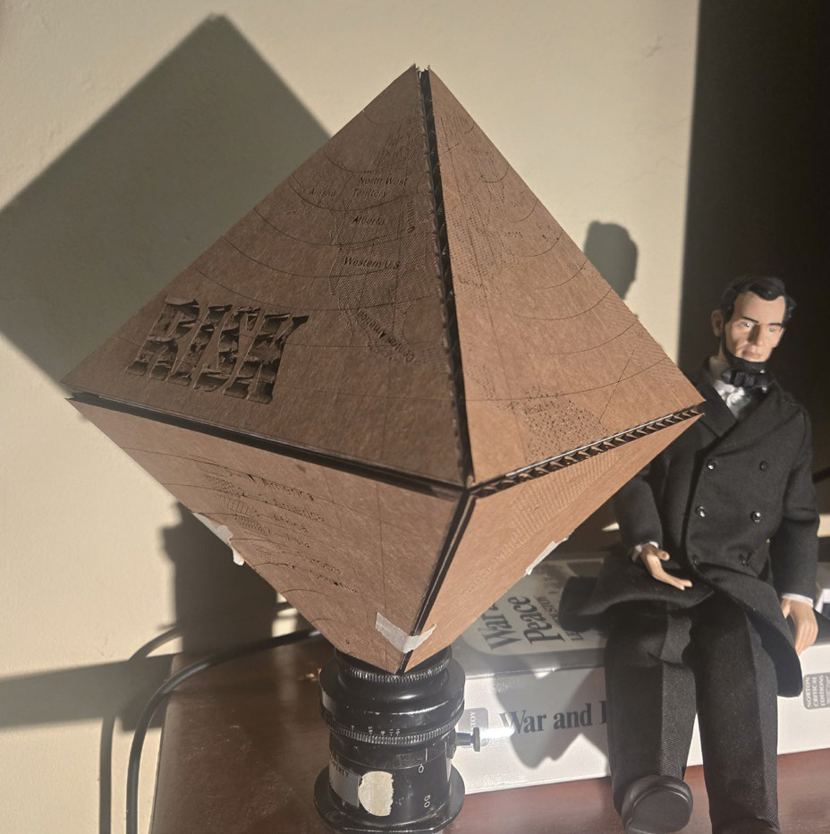
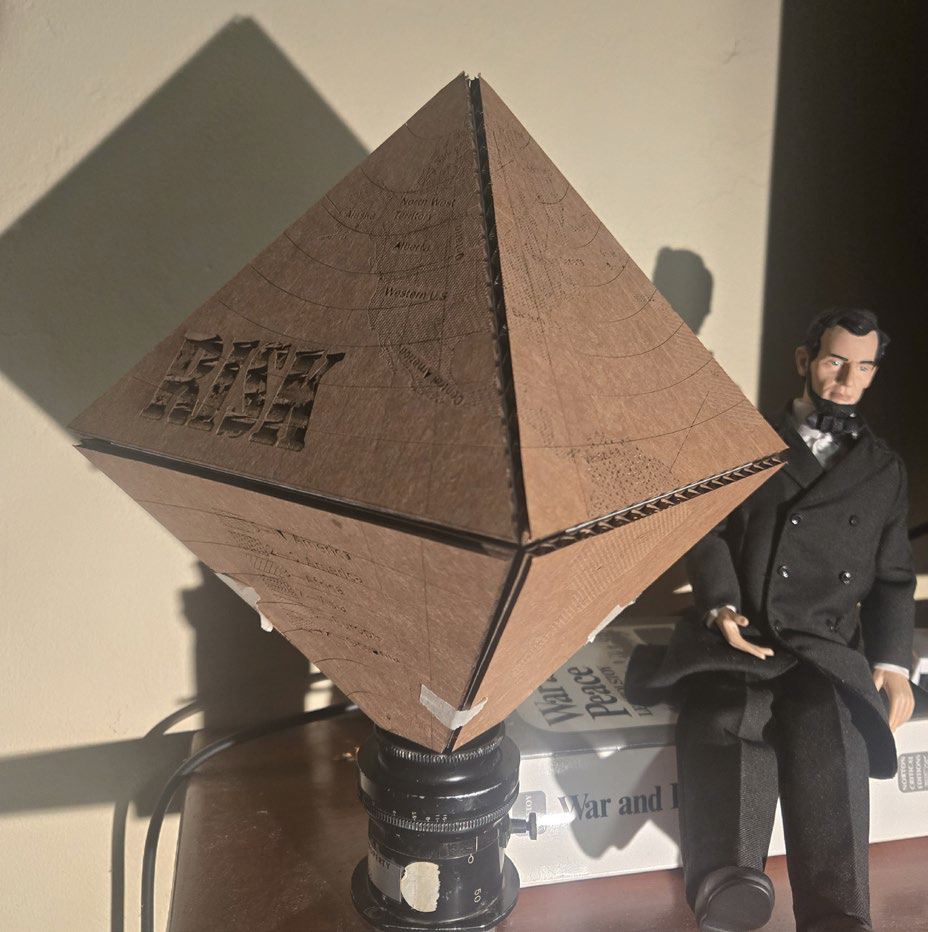

The Fuel Cycle Atlas challenges the reader to grapple with tangibility in a subject inherently intangible, and focuses on bringing previously under-platformed perspectives into the broader conversation of the future of energy in America. As energy needs have skyrocketed, attention has returned to Nuclear as a clean, safe, and reliable way for America to power its future—but while flashy headlines advertise ventures in new advanced reactors, another sector of the industry is quietly growing to accommodate: the Fuel Cycle, or the mining, milling, fabrication, and storage of Uranium Fuel. This project critically explores this, not to hamper progress, but to participate in a practical and sober discussion about risks and tradeoffs given the lessons we can learn from past mistakes.
To center the nuance of how uranium extraction tends to interact with indigenous territories, the first map in my "atlas" begins by intersecting the uranium geological resource areas with tribal territory, and serves as a spatial index by locating every site associated with the Uranium Fuel Cycle in America. The booklet features 3-dimensional, shadow-box style popout maps of two abandoned open pit uranium mines—Midnite Mine (on Spokane Territory in Washington) and pits in the Gas Hills Uranium Exploration District (adjacent to the Wind River Reservation in Wyoming). "Energy" is such an inherently intangible subject, that it can be nearly impossible to discuss in practical terms, so these maps display the scars in the Earth left by the uranium mining industry in a minimalist architectural papercraft style, arranged as 3d-popouts explicitly to require physical interaction. My hope is that someone who interacts with the Fuel Cycle Atlas leaves excited about the future, but aware of the costs.


 
